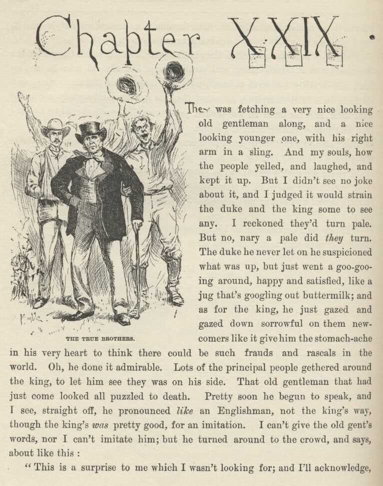
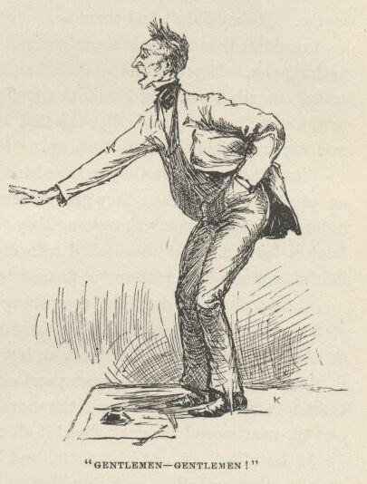
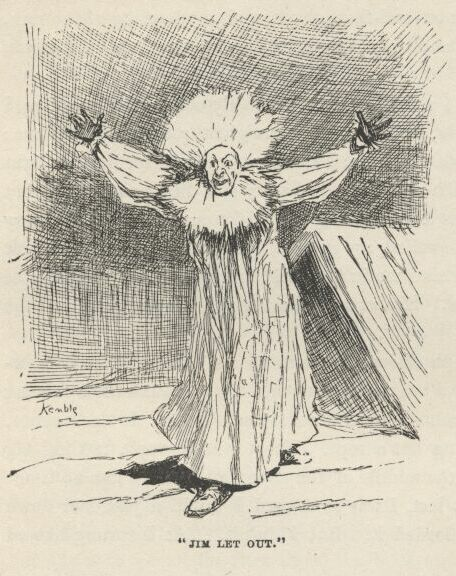
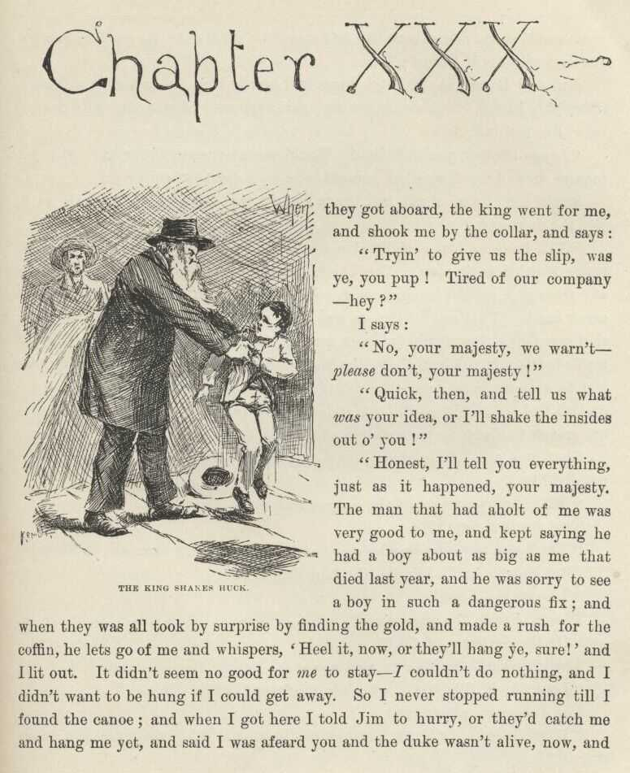
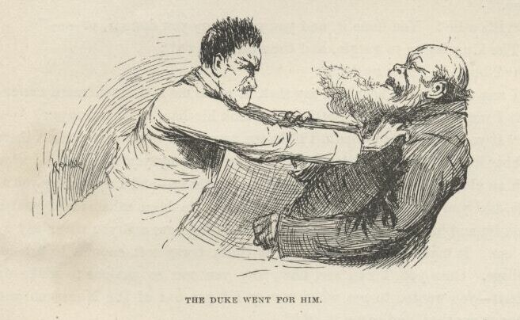
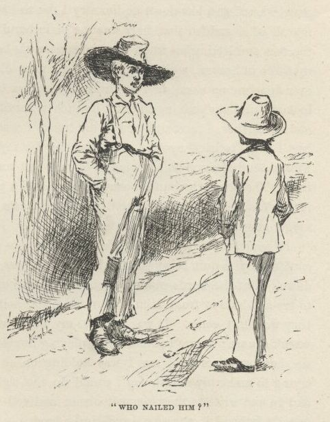
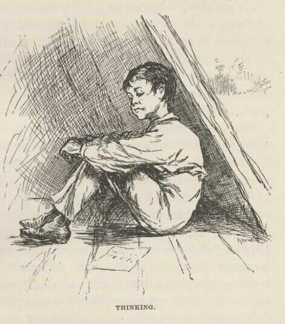

Adventures of Huckleberry Finn

CHAPTER XXIX.
THEY was fetching a very nice-looking old gentleman along, and a nice-looking younger
one, with his right arm in a sling. And, my souls, how the people yelled and laughed,
and kept it up. But I didn't see no joke about it, and I judged it would strain the
duke and the king some to see any. I reckoned they'd turn pale. But no, nary a pale
did they turn. The duke he never let on he suspicioned what was up, but just went a goo-gooing
around, happy and satisfied, like a jug that's googling out buttermilk; and as for
the king, he just gazed and gazed down sorrowful on them new-comers like it give him
the stomach-ache in his very heart to think there could be such frauds and rascals
in the world. Oh, he done it admirable. Lots of the principal people gethered around
the king, to let him see they was on his side. That old gentleman that had just come
looked all puzzled to death. Pretty soon he begun to speak, and I see straight off
he pronounced like an Englishman—not the king's way, though the king's was pretty good for an imitation. I can't give the old gent's words, nor I can't imitate
him; but he turned around to the crowd, and says, about like this:
"This is a surprise to me which I wasn't looking for; and I'll acknowledge, candid
and frank, I ain't very well fixed to meet it and answer it; for my brother and me
has had misfortunes; he's broke his arm, and our baggage got put off at a town above
here last night in the night by a mistake. I am Peter Wilks' brother Harvey, and
this is his brother William, which can't hear nor speak—and can't even make signs
to amount to much, now't he's only got one hand to work them with. We are who we
say we are; and in a day or two, when I get the baggage, I can prove it. But up till
then I won't say nothing more, but go to the hotel and wait."
So him and the new dummy started off; and the king he laughs, and blethers out:
"Broke his arm—very likely, ain't it?—and very convenient, too, for a fraud that's got to make signs, and ain't learnt
how. Lost their baggage! That's mighty good!—and mighty ingenious—under the circumstances!"
So he laughed again; and so did everybody else, except three or four, or maybe half
a dozen. One of these was that doctor; another one was a sharp-looking gentleman,
with a carpet-bag of the old-fashioned kind made out of carpet-stuff, that had just
come off of the steamboat and was talking to him in a low voice, and glancing towards
the king now and then and nodding their heads—it was Levi Bell, the lawyer that was
gone up to Louisville; and another one was a big rough husky that come along and listened
to all the old gentleman said, and was listening to the king now. And when the king
got done this husky up and says:
"Say, looky here; if you are Harvey Wilks, when'd you come to this town?"
"The day before the funeral, friend," says the king.
"But what time o' day?"
"In the evenin'—'bout an hour er two before sundown."
"How'd you come?"
"I come down on the Susan Powell from Cincinnati."
"Well, then, how'd you come to be up at the Pint in the mornin'—in a canoe?"
"I warn't up at the Pint in the mornin'."
"It's a lie."
Several of them jumped for him and begged him not to talk that way to an old man and
a preacher.
"Preacher be hanged, he's a fraud and a liar. He was up at the Pint that mornin'.
I live up there, don't I? Well, I was up there, and he was up there. I see him
there. He come in a canoe, along with Tim Collins and a boy."
The doctor he up and says:
"Would you know the boy again if you was to see him, Hines?"
"I reckon I would, but I don't know. Why, yonder he is, now. I know him perfectly
easy."
It was me he pointed at. The doctor says:
"Neighbors, I don't know whether the new couple is frauds or not; but if these two ain't frauds, I am an idiot, that's all. I think it's our duty to see that they
don't get away from here till we've looked into this thing. Come along, Hines; come
along, the rest of you. We'll take these fellows to the tavern and affront them with
t'other couple, and I reckon we'll find out something before we get through."
It was nuts for the crowd, though maybe not for the king's friends; so we all started.
It was about sundown. The doctor he led me along by the hand, and was plenty kind
enough, but he never let go my hand.
We all got in a big room in the hotel, and lit up some candles, and fetched in the
new couple. First, the doctor says:
"I don't wish to be too hard on these two men, but I think they're frauds, and they
may have complices that we don't know nothing about. If they have, won't the complices
get away with that bag of gold Peter Wilks left? It ain't unlikely. If these men
ain't frauds, they won't object to sending for that money and letting us keep it till
they prove they're all right—ain't that so?"
Everybody agreed to that. So I judged they had our gang in a pretty tight place right
at the outstart. But the king he only looked sorrowful, and says:
"Gentlemen, I wish the money was there, for I ain't got no disposition to throw anything
in the way of a fair, open, out-and-out investigation o' this misable business; but,
alas, the money ain't there; you k'n send and see, if you want to."
"Where is it, then?"
"Well, when my niece give it to me to keep for her I took and hid it inside o' the
straw tick o' my bed, not wishin' to bank it for the few days we'd be here, and considerin'
the bed a safe place, we not bein' used to niggers, and suppos'n' 'em honest, like
servants in England. The niggers stole it the very next mornin' after I had went
down stairs; and when I sold 'em I hadn't missed the money yit, so they got clean
away with it. My servant here k'n tell you 'bout it, gentlemen."
The doctor and several said "Shucks!" and I see nobody didn't altogether believe him.
One man asked me if I see the niggers steal it. I said no, but I see them sneaking
out of the room and hustling away, and I never thought nothing, only I reckoned they
was afraid they had waked up my master and was trying to get away before he made trouble
with them. That was all they asked me. Then the doctor whirls on me and says:
"Are you English, too?"
I says yes; and him and some others laughed, and said, "Stuff!"
Well, then they sailed in on the general investigation, and there we had it, up and
down, hour in, hour out, and nobody never said a word about supper, nor ever seemed
to think about it—and so they kept it up, and kept it up; and it was the worst mixed-up thing you ever see. They made the king tell his yarn, and they
made the old gentleman tell his'n; and anybody but a lot of prejudiced chuckleheads
would a seen that the old gentleman was spinning truth and t'other one lies. And by and by they
had me up to tell what I knowed. The king he give me a left-handed look out of the
corner of his eye, and so I knowed enough to talk on the right side. I begun to tell
about Sheffield, and how we lived there, and all about the English Wilkses, and so
on; but I didn't get pretty fur till the doctor begun to laugh; and Levi Bell, the
lawyer, says:
"Set down, my boy; I wouldn't strain myself if I was you. I reckon you ain't used
to lying, it don't seem to come handy; what you want is practice. You do it pretty
awkward."
I didn't care nothing for the compliment, but I was glad to be let off, anyway.
The doctor he started to say something, and turns and says:
"If you'd been in town at first, Levi Bell—" The king broke in and reached out his
hand, and says:
"Why, is this my poor dead brother's old friend that he's wrote so often about?"
The lawyer and him shook hands, and the lawyer smiled and looked pleased, and they
talked right along awhile, and then got to one side and talked low; and at last the
lawyer speaks up and says:
"That 'll fix it. I'll take the order and send it, along with your brother's, and
then they'll know it's all right."
So they got some paper and a pen, and the king he set down and twisted his head to
one side, and chawed his tongue, and scrawled off something; and then they give the
pen to the duke—and then for the first time the duke looked sick. But he took the
pen and wrote. So then the lawyer turns to the new old gentleman and says:
"You and your brother please write a line or two and sign your names."
The old gentleman wrote, but nobody couldn't read it. The lawyer looked powerful
astonished, and says:
"Well, it beats me"—and snaked a lot of old letters out of his pocket, and examined them, and then examined
the old man's writing, and then them again; and then says: "These old letters is from Harvey Wilks; and here's these two handwritings, and anybody can see they didn't write them" (the king and the duke
looked sold and foolish, I tell you, to see how the lawyer had took them in), "and
here's this old gentleman's hand writing, and anybody can tell, easy enough, he didn't write them—fact is, the scratches he makes ain't properly writing at all. Now, here's some letters from—"
The new old gentleman says:
"If you please, let me explain. Nobody can read my hand but my brother there—so he
copies for me. It's his hand you've got there, not mine."
"Well!" says the lawyer, "this is a state of things. I've got some of William's letters, too; so if you'll get him
to write a line or so we can com—"
"He can't write with his left hand," says the old gentleman. "If he could use his right hand,
you would see that he wrote his own letters and mine too. Look at both, please—they're
by the same hand."
The lawyer done it, and says:
"I believe it's so—and if it ain't so, there's a heap stronger resemblance than I'd
noticed before, anyway. Well, well, well! I thought we was right on the track of
a solution, but it's gone to grass, partly. But anyway, one thing is proved—these two ain't either of 'em Wilkses"—and he wagged his head towards the king and the
duke.
Well, what do you think? That muleheaded old fool wouldn't give in then! Indeed he wouldn't. Said it warn't no fair test. Said his brother William was
the cussedest joker in the world, and hadn't tried to write—he see William was going to play one of his jokes the minute he put the pen to paper.
And so he warmed up and went warbling and warbling right along till he was actuly
beginning to believe what he was saying himself; but pretty soon the new gentleman broke in, and says:
"I've thought of something. Is there anybody here that helped to lay out my br—helped
to lay out the late Peter Wilks for burying?"
"Yes," says somebody, "me and Ab Turner done it. We're both here."
Then the old man turns towards the king, and says:
"Perhaps this gentleman can tell me what was tattooed on his breast?"
Blamed if the king didn't have to brace up mighty quick, or he'd a squshed down like
a bluff bank that the river has cut under, it took him so sudden; and, mind you, it
was a thing that was calculated to make most anybody sqush to get fetched such a solid one as that without any notice, because how was
he going to know what was tattooed on the man? He whitened a little; he couldn't help
it; and it was mighty still in there, and everybody bending a little forwards and
gazing at him. Says I to myself, now he'll throw up the sponge—there ain't no more use. Well, did he? A body can't hardly
believe it, but he didn't. I reckon he thought he'd keep the thing up till he tired
them people out, so they'd thin out, and him and the duke could break loose and get
away. Anyway, he set there, and pretty soon he begun to smile, and says:
"Mf! It's a very tough question, ain't it! yes, sir, I k'n tell you what's tattooed on his breast. It's jest a small, thin, blue
arrow—that's what it is; and if you don't look clost, you can't see it. now what do you say—hey?"
Well, I never see anything like that old blister for clean out-and-out cheek.
The new old gentleman turns brisk towards Ab Turner and his pard, and his eye lights
up like he judged he'd got the king this time, and says:
"There—you've heard what he said! Was there any such mark on Peter Wilks' breast?"
Both of them spoke up and says:
"We didn't see no such mark."
"Good!" says the old gentleman. "Now, what you did see on his breast was a small dim P, and a B (which is an initial he dropped when
he was young), and a W, with dashes between them, so: P—B—W"—and he marked them that
way on a piece of paper. "Come, ain't that what you saw?"
Both of them spoke up again, and says:
"No, we didn't. We never seen any marks at all."
Well, everybody was in a state of mind now, and they sings out:
"The whole bilin' of 'm 's frauds! Le's duck 'em! le's drown 'em! le's ride 'em on a rail!" and everybody
was whooping at once, and there was a rattling powwow. But the lawyer he jumps on
the table and yells, and says:
"Gentlemen—gentlemen! Hear me just a word—just a single word—if you please! There's one way yet—let's go and dig up the corpse and look."

That took them.
"Hooray!" they all shouted, and was starting right off; but the lawyer and the doctor
sung out:
"Hold on, hold on! Collar all these four men and the boy, and fetch them along, too!"
"We'll do it!" they all shouted; "and if we don't find them marks we'll lynch the
whole gang!"
I was scared, now, I tell you. But there warn't no getting away, you know. They gripped
us all, and marched us right along, straight for the graveyard, which was a mile and
a half down the river, and the whole town at our heels, for we made noise enough,
and it was only nine in the evening.
As we went by our house I wished I hadn't sent Mary Jane out of town; because now
if I could tip her the wink she'd light out and save me, and blow on our dead-beats.
Well, we swarmed along down the river road, just carrying on like wildcats; and to
make it more scary the sky was darking up, and the lightning beginning to wink and
flitter, and the wind to shiver amongst the leaves. This was the most awful trouble
and most dangersome I ever was in; and I was kinder stunned; everything was going
so different from what I had allowed for; stead of being fixed so I could take my
own time if I wanted to, and see all the fun, and have Mary Jane at my back to save
me and set me free when the close-fit come, here was nothing in the world betwixt
me and sudden death but just them tattoo-marks. If they didn't find them—
I couldn't bear to think about it; and yet, somehow, I couldn't think about nothing
else. It got darker and darker, and it was a beautiful time to give the crowd the
slip; but that big husky had me by the wrist—Hines—and a body might as well try to
give Goliar the slip. He dragged me right along, he was so excited, and I had to
run to keep up.
When they got there they swarmed into the graveyard and washed over it like an overflow.
And when they got to the grave they found they had about a hundred times as many
shovels as they wanted, but nobody hadn't thought to fetch a lantern. But they sailed
into digging anyway by the flicker of the lightning, and sent a man to the nearest
house, a half a mile off, to borrow one.
So they dug and dug like everything; and it got awful dark, and the rain started,
and the wind swished and swushed along, and the lightning come brisker and brisker,
and the thunder boomed; but them people never took no notice of it, they was so full
of this business; and one minute you could see everything and every face in that big
crowd, and the shovelfuls of dirt sailing up out of the grave, and the next second
the dark wiped it all out, and you couldn't see nothing at all.
At last they got out the coffin and begun to unscrew the lid, and then such another
crowding and shouldering and shoving as there was, to scrouge in and get a sight,
you never see; and in the dark, that way, it was awful. Hines he hurt my wrist dreadful
pulling and tugging so, and I reckon he clean forgot I was in the world, he was so
excited and panting.
All of a sudden the lightning let go a perfect sluice of white glare, and somebody
sings out:
"By the living jingo, here's the bag of gold on his breast!"
Hines let out a whoop, like everybody else, and dropped my wrist and give a big surge
to bust his way in and get a look, and the way I lit out and shinned for the road
in the dark there ain't nobody can tell.
I had the road all to myself, and I fairly flew—leastways, I had it all to myself
except the solid dark, and the now-and-then glares, and the buzzing of the rain, and
the thrashing of the wind, and the splitting of the thunder; and sure as you are born
I did clip it along!
When I struck the town I see there warn't nobody out in the storm, so I never hunted
for no back streets, but humped it straight through the main one; and when I begun
to get towards our house I aimed my eye and set it. No light there; the house all
dark—which made me feel sorry and disappointed, I didn't know why. But at last, just
as I was sailing by, flash comes the light in Mary Jane's window! and my heart swelled up sudden, like to bust;
and the same second the house and all was behind me in the dark, and wasn't ever going
to be before me no more in this world. She was the best girl I ever see, and had the most sand.
The minute I was far enough above the town to see I could make the towhead, I begun
to look sharp for a boat to borrow, and the first time the lightning showed me one
that wasn't chained I snatched it and shoved. It was a canoe, and warn't fastened
with nothing but a rope. The towhead was a rattling big distance off, away out there
in the middle of the river, but I didn't lose no time; and when I struck the raft
at last I was so fagged I would a just laid down to blow and gasp if I could afforded
it. But I didn't. As I sprung aboard I sung out:
"Out with you, Jim, and set her loose! Glory be to goodness, we're shut of them!"

Jim lit out, and was a-coming for me with both arms spread, he was so full of joy;
but when I glimpsed him in the lightning my heart shot up in my mouth and I went overboard
backwards; for I forgot he was old King Lear and a drownded A-rab all in one, and
it most scared the livers and lights out of me. But Jim fished me out, and was going
to hug me and bless me, and so on, he was so glad I was back and we was shut of the
king and the duke, but I says:
"Not now; have it for breakfast, have it for breakfast! Cut loose and let her slide!"
So in two seconds away we went a-sliding down the river, and it did seem so good to be free again and all by ourselves on the big river, and nobody to
bother us. I had to skip around a bit, and jump up and crack my heels a few times—I
couldn't help it; but about the third crack I noticed a sound that I knowed mighty
well, and held my breath and listened and waited; and sure enough, when the next flash
busted out over the water, here they come!—and just a-laying to their oars and making
their skiff hum! It was the king and the duke.
So I wilted right down on to the planks then, and give up; and it was all I could
do to keep from crying.

CHAPTER XXX.
WHEN they got aboard the king went for me, and shook me by the collar, and says:
"Tryin' to give us the slip, was ye, you pup! Tired of our company, hey?"
I says:
"No, your majesty, we warn't—please don't, your majesty!"
"Quick, then, and tell us what was your idea, or I'll shake the insides out o' you!"
"Honest, I'll tell you everything just as it happened, your majesty. The man that
had a-holt of me was very good to me, and kept saying he had a boy about as big as
me that died last year, and he was sorry to see a boy in such a dangerous fix; and
when they was all took by surprise by finding the gold, and made a rush for the coffin,
he lets go of me and whispers, 'Heel it now, or they'll hang ye, sure!' and I lit
out. It didn't seem no good for me to stay—I couldn't do nothing, and I didn't want to be hung if I could get away.
So I never stopped running till I found the canoe; and when I got here I told Jim
to hurry, or they'd catch me and hang me yet, and said I was afeard you and the duke
wasn't alive now, and I was awful sorry, and so was Jim, and was awful glad when we
see you coming; you may ask Jim if I didn't."
Jim said it was so; and the king told him to shut up, and said, "Oh, yes, it's mighty likely!" and shook me up again, and said he reckoned he'd drownd me. But the duke
says:
"Leggo the boy, you old idiot! Would you a done any different? Did you inquire around for him when you got loose? I don't remember it."
So the king let go of me, and begun to cuss that town and everybody in it. But the
duke says:
"You better a blame' sight give yourself a good cussing, for you're the one that's entitled to it most. You hain't done a
thing from the start that had any sense in it, except coming out so cool and cheeky
with that imaginary blue-arrow mark. That was bright—it was right down bully; and it was the thing that saved us. For if it hadn't
been for that they'd a jailed us till them Englishmen's baggage come—and then—the
penitentiary, you bet! But that trick took 'em to the graveyard, and the gold done
us a still bigger kindness; for if the excited fools hadn't let go all holts and made
that rush to get a look we'd a slept in our cravats to-night—cravats warranted to
wear, too—longer than we'd need 'em."
They was still a minute—thinking; then the king says, kind of absent-minded like:
"Mf! And we reckoned the niggers stole it!"
That made me squirm!
"Yes," says the duke, kinder slow and deliberate and sarcastic, "we did."
After about a half a minute the king drawls out:
"Leastways, I did."
The duke says, the same way:
"On the contrary, I did."
The king kind of ruffles up, and says:
"Looky here, Bilgewater, what'r you referrin' to?"
The duke says, pretty brisk:
"When it comes to that, maybe you'll let me ask, what was you referring to?"
"Shucks!" says the king, very sarcastic; "but I don't know—maybe you was asleep, and
didn't know what you was about."
The duke bristles up now, and says:
"Oh, let up on this cussed nonsense; do you take me for a blame' fool? Don't you reckon I know
who hid that money in that coffin?"
"Yes, sir! I know you do know, because you done it yourself!"
"It's a lie!"—and the duke went for him. The king sings out:
"Take y'r hands off!—leggo my throat!—I take it all back!"

The duke says:
"Well, you just own up, first, that you did hide that money there, intending to give me the slip one of these days, and come
back and dig it up, and have it all to yourself."
"Wait jest a minute, duke—answer me this one question, honest and fair; if you didn't
put the money there, say it, and I'll b'lieve you, and take back everything I said."
"You old scoundrel, I didn't, and you know I didn't. There, now!"
"Well, then, I b'lieve you. But answer me only jest this one more—now don't git mad; didn't you have it in your mind to hook the money and hide it?"
The duke never said nothing for a little bit; then he says:
"Well, I don't care if I did, I didn't do it, anyway. But you not only had it in mind to do it, but you done it."
"I wisht I never die if I done it, duke, and that's honest. I won't say I warn't
goin' to do it, because I was; but you—I mean somebody—got in ahead o' me."
"It's a lie! You done it, and you got to say you done it, or—"
The king began to gurgle, and then he gasps out:
"'Nough!—I own up!"
I was very glad to hear him say that; it made me feel much more easier than what I
was feeling before. So the duke took his hands off and says:
"If you ever deny it again I'll drown you. It's well for you to set there and blubber like a baby—it's fitten for you, after the way you've
acted. I never see such an old ostrich for wanting to gobble everything—and I a-trusting
you all the time, like you was my own father. You ought to been ashamed of yourself
to stand by and hear it saddled on to a lot of poor niggers, and you never say a word
for 'em. It makes me feel ridiculous to think I was soft enough to believe that rubbage. Cuss you, I can see now why you was so anxious to make up the deffisit—you
wanted to get what money I'd got out of the Nonesuch and one thing or another, and
scoop it all!"
The king says, timid, and still a-snuffling:
"Why, duke, it was you that said make up the deffisit; it warn't me."
"Dry up! I don't want to hear no more out of you!" says the duke. "And now you see what you GOT by it. They've got all their own money back, and all of ourn but a shekel or two besides. G'long to bed, and don't you deffersit me no more deffersits, long 's you live!"
So the king sneaked into the wigwam and took to his bottle for comfort, and before
long the duke tackled HIS bottle; and so in about a half an hour they was as thick
as thieves again, and the tighter they got the lovinger they got, and went off a-snoring
in each other's arms. They both got powerful mellow, but I noticed the king didn't
get mellow enough to forget to remember to not deny about hiding the money-bag again.
That made me feel easy and satisfied. Of course when they got to snoring we had
a long gabble, and I told Jim everything.

CHAPTER XXXI.
WE dasn't stop again at any town for days and days; kept right along down the river.
We was down south in the warm weather now, and a mighty long ways from home. We
begun to come to trees with Spanish moss on them, hanging down from the limbs like
long, gray beards. It was the first I ever see it growing, and it made the woods
look solemn and dismal. So now the frauds reckoned they was out of danger, and they
begun to work the villages again.
First they done a lecture on temperance; but they didn't make enough for them both
to get drunk on. Then in another village they started a dancing-school; but they
didn't know no more how to dance than a kangaroo does; so the first prance they made
the general public jumped in and pranced them out of town. Another time they tried
to go at yellocution; but they didn't yellocute long till the audience got up and
give them a solid good cussing, and made them skip out. They tackled missionarying,
and mesmerizing, and doctoring, and telling fortunes, and a little of everything;
but they couldn't seem to have no luck. So at last they got just about dead broke,
and laid around the raft as she floated along, thinking and thinking, and never saying
nothing, by the half a day at a time, and dreadful blue and desperate.
And at last they took a change and begun to lay their heads together in the wigwam
and talk low and confidential two or three hours at a time. Jim and me got uneasy.
We didn't like the look of it. We judged they was studying up some kind of worse
deviltry than ever. We turned it over and over, and at last we made up our minds
they was going to break into somebody's house or store, or was going into the counterfeit-money
business, or something. So then we was pretty scared, and made up an agreement that
we wouldn't have nothing in the world to do with such actions, and if we ever got
the least show we would give them the cold shake and clear out and leave them behind.
Well, early one morning we hid the raft in a good, safe place about two mile below
a little bit of a shabby village named Pikesville, and the king he went ashore and
told us all to stay hid whilst he went up to town and smelt around to see if anybody
had got any wind of the Royal Nonesuch there yet. ("House to rob, you mean," says I to myself; "and when you get through robbing it you'll come back here and
wonder what has become of me and Jim and the raft—and you'll have to take it out in
wondering.") And he said if he warn't back by midday the duke and me would know it
was all right, and we was to come along.
So we stayed where we was. The duke he fretted and sweated around, and was in a mighty
sour way. He scolded us for everything, and we couldn't seem to do nothing right;
he found fault with every little thing. Something was a-brewing, sure. I was good
and glad when midday come and no king; we could have a change, anyway—and maybe a
chance for the change on top of it. So me and the duke went up to the village, and hunted around
there for the king, and by and by we found him in the back room of a little low doggery,
very tight, and a lot of loafers bullyragging him for sport, and he a-cussing and
a-threatening with all his might, and so tight he couldn't walk, and couldn't do nothing
to them. The duke he begun to abuse him for an old fool, and the king begun to sass
back, and the minute they was fairly at it I lit out and shook the reefs out of my
hind legs, and spun down the river road like a deer, for I see our chance; and I made
up my mind that it would be a long day before they ever see me and Jim again. I got
down there all out of breath but loaded up with joy, and sung out:
"Set her loose, Jim! we're all right now!"
But there warn't no answer, and nobody come out of the wigwam. Jim was gone! I set
up a shout—and then another—and then another one; and run this way and that in the
woods, whooping and screeching; but it warn't no use—old Jim was gone. Then I set
down and cried; I couldn't help it. But I couldn't set still long. Pretty soon I
went out on the road, trying to think what I better do, and I run across a boy walking,
and asked him if he'd seen a strange nigger dressed so and so, and he says:
"Yes."
"Whereabouts?" says I.
"Down to Silas Phelps' place, two mile below here. He's a runaway nigger, and they've
got him. Was you looking for him?"
"You bet I ain't! I run across him in the woods about an hour or two ago, and he
said if I hollered he'd cut my livers out—and told me to lay down and stay where I
was; and I done it. Been there ever since; afeard to come out."
"Well," he says, "you needn't be afeard no more, becuz they've got him. He run off
f'm down South, som'ers."
"It's a good job they got him."
"Well, I reckon! There's two hunderd dollars reward on him. It's like picking up money out'n the
road."
"Yes, it is—and I could a had it if I'd been big enough; I see him first. Who nailed him?"

"It was an old fellow—a stranger—and he sold out his chance in him for forty dollars,
becuz he's got to go up the river and can't wait. Think o' that, now! You bet I'd wait, if it was seven year."
"That's me, every time," says I. "But maybe his chance ain't worth no more than that,
if he'll sell it so cheap. Maybe there's something ain't straight about it."
"But it is, though—straight as a string. I see the handbill myself. It tells all about him,
to a dot—paints him like a picture, and tells the plantation he's frum, below Newrleans. No-sirree-bob, they ain't no trouble 'bout that speculation, you bet you. Say, gimme a chaw tobacker, won't ye?"
I didn't have none, so he left. I went to the raft, and set down in the wigwam to
think. But I couldn't come to nothing. I thought till I wore my head sore, but I
couldn't see no way out of the trouble. After all this long journey, and after all
we'd done for them scoundrels, here it was all come to nothing, everything all busted
up and ruined, because they could have the heart to serve Jim such a trick as that,
and make him a slave again all his life, and amongst strangers, too, for forty dirty
dollars.
Once I said to myself it would be a thousand times better for Jim to be a slave at
home where his family was, as long as he'd got to be a slave, and so I'd better write a letter to Tom Sawyer and tell him to tell
Miss Watson where he was. But I soon give up that notion for two things: she'd be
mad and disgusted at his rascality and ungratefulness for leaving her, and so she'd
sell him straight down the river again; and if she didn't, everybody naturally despises
an ungrateful nigger, and they'd make Jim feel it all the time, and so he'd feel ornery
and disgraced. And then think of me! It would get all around that Huck Finn helped a nigger to get his freedom; and
if I was ever to see anybody from that town again I'd be ready to get down and lick
his boots for shame. That's just the way: a person does a low-down thing, and then
he don't want to take no consequences of it. Thinks as long as he can hide it, it
ain't no disgrace. That was my fix exactly. The more I studied about this the more
my conscience went to grinding me, and the more wicked and low-down and ornery I got
to feeling. And at last, when it hit me all of a sudden that here was the plain hand
of Providence slapping me in the face and letting me know my wickedness was being
watched all the time from up there in heaven, whilst I was stealing a poor old woman's
nigger that hadn't ever done me no harm, and now was showing me there's One that's
always on the lookout, and ain't a-going to allow no such miserable doings to go only
just so fur and no further, I most dropped in my tracks I was so scared. Well, I
tried the best I could to kinder soften it up somehow for myself by saying I was brung
up wicked, and so I warn't so much to blame; but something inside of me kept saying,
"There was the Sunday-school, you could a gone to it; and if you'd a done it they'd
a learnt you there that people that acts as I'd been acting about that nigger goes
to everlasting fire."
It made me shiver. And I about made up my mind to pray, and see if I couldn't try
to quit being the kind of a boy I was and be better. So I kneeled down. But the
words wouldn't come. Why wouldn't they? It warn't no use to try and hide it from
Him. Nor from me, neither. I knowed very well why they wouldn't come. It was because my heart warn't
right; it was because I warn't square; it was because I was playing double. I was
letting on to give up sin, but away inside of me I was holding on to the biggest one of all.
I was trying to make my mouth say I would do the right thing and the clean thing, and go and write to that nigger's
owner and tell where he was; but deep down in me I knowed it was a lie, and He knowed
it. You can't pray a lie—I found that out.
So I was full of trouble, full as I could be; and didn't know what to do. At last
I had an idea; and I says, I'll go and write the letter—and then see if I can pray.
Why, it was astonishing, the way I felt as light as a feather right straight off,
and my troubles all gone. So I got a piece of paper and a pencil, all glad and excited,
and set down and wrote:
Miss Watson, your runaway nigger Jim is down here two mile below Pikesville, and Mr.
Phelps has got him and he will give him up for the reward if you send.
Huck Finn.

I felt good and all washed clean of sin for the first time I had ever felt so in my
life, and I knowed I could pray now. But I didn't do it straight off, but laid the
paper down and set there thinking—thinking how good it was all this happened so, and
how near I come to being lost and going to hell. And went on thinking. And got to
thinking over our trip down the river; and I see Jim before me all the time: in the
day and in the night-time, sometimes moonlight, sometimes storms, and we a-floating
along, talking and singing and laughing. But somehow I couldn't seem to strike no
places to harden me against him, but only the other kind. I'd see him standing my
watch on top of his'n, 'stead of calling me, so I could go on sleeping; and see him
how glad he was when I come back out of the fog; and when I come to him again in the
swamp, up there where the feud was; and such-like times; and would always call me
honey, and pet me and do everything he could think of for me, and how good he always
was; and at last I struck the time I saved him by telling the men we had small-pox
aboard, and he was so grateful, and said I was the best friend old Jim ever had in
the world, and the only one he's got now; and then I happened to look around and see that paper.
It was a close place. I took it up, and held it in my hand. I was a-trembling, because
I'd got to decide, forever, betwixt two things, and I knowed it. I studied a minute,
sort of holding my breath, and then says to myself:
"All right, then, I'll go to hell"—and tore it up.
It was awful thoughts and awful words, but they was said. And I let them stay said;
and never thought no more about reforming. I shoved the whole thing out of my head,
and said I would take up wickedness again, which was in my line, being brung up to
it, and the other warn't. And for a starter I would go to work and steal Jim out
of slavery again; and if I could think up anything worse, I would do that, too; because
as long as I was in, and in for good, I might as well go the whole hog.
Then I set to thinking over how to get at it, and turned over some considerable many
ways in my mind; and at last fixed up a plan that suited me. So then I took the bearings
of a woody island that was down the river a piece, and as soon as it was fairly dark
I crept out with my raft and went for it, and hid it there, and then turned in. I
slept the night through, and got up before it was light, and had my breakfast, and
put on my store clothes, and tied up some others and one thing or another in a bundle,
and took the canoe and cleared for shore. I landed below where I judged was Phelps's
place, and hid my bundle in the woods, and then filled up the canoe with water, and
loaded rocks into her and sunk her where I could find her again when I wanted her,
about a quarter of a mile below a little steam sawmill that was on the bank.
Then I struck up the road, and when I passed the mill I see a sign on it, "Phelps's
Sawmill," and when I come to the farm-houses, two or three hundred yards further along,
I kept my eyes peeled, but didn't see nobody around, though it was good daylight now.
But I didn't mind, because I didn't want to see nobody just yet—I only wanted to
get the lay of the land. According to my plan, I was going to turn up there from the
village, not from below. So I just took a look, and shoved along, straight for town.
Well, the very first man I see when I got there was the duke. He was sticking up
a bill for the Royal Nonesuch—three-night performance—like that other time. They
had the cheek, them frauds! I was right on him before I could shirk. He looked astonished,
and says:
"Hel-lo! Where'd you come from?" Then he says, kind of glad and eager, "Where's the raft?—got her in
a good place?"
I says:
"Why, that's just what I was going to ask your grace."
Then he didn't look so joyful, and says:
"What was your idea for asking me?" he says.
"Well," I says, "when I see the king in that doggery yesterday I says to myself, we
can't get him home for hours, till he's soberer; so I went a-loafing around town to
put in the time and wait. A man up and offered me ten cents to help him pull a skiff
over the river and back to fetch a sheep, and so I went along; but when we was dragging
him to the boat, and the man left me a-holt of the rope and went behind him to shove
him along, he was too strong for me and jerked loose and run, and we after him. We
didn't have no dog, and so we had to chase him all over the country till we tired
him out. We never got him till dark; then we fetched him over, and I started down
for the raft. When I got there and see it was gone, I says to myself, 'They've got
into trouble and had to leave; and they've took my nigger, which is the only nigger
I've got in the world, and now I'm in a strange country, and ain't got no property
no more, nor nothing, and no way to make my living;' so I set down and cried. I slept
in the woods all night. But what did become of the raft, then?—and Jim—poor Jim!"
"Blamed if I know—that is, what's become of the raft. That old fool had made a trade
and got forty dollars, and when we found him in the doggery the loafers had matched
half-dollars with him and got every cent but what he'd spent for whisky; and when
I got him home late last night and found the raft gone, we said, 'That little rascal
has stole our raft and shook us, and run off down the river.'"
"I wouldn't shake my nigger, would I?—the only nigger I had in the world, and the only property."
"We never thought of that. Fact is, I reckon we'd come to consider him our nigger; yes, we did consider him so—goodness knows we had trouble enough for him.
So when we see the raft was gone and we flat broke, there warn't anything for it
but to try the Royal Nonesuch another shake. And I've pegged along ever since, dry
as a powder-horn. Where's that ten cents? Give it here."